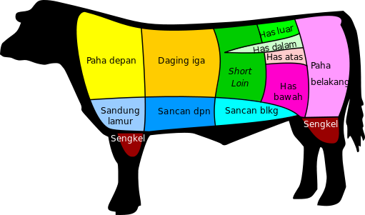

Daging Sapi

Daging sapi (bahasa Inggris: beef) adalah daging yang diperoleh dari sapi
yang biasa dan umum digunakan untuk keperluan konsumsi makanan. Di setiap
daerah, penggunaan daging ini berbeda-beda tergantung dari cara
pengolahannya. Sebagai contoh has luar, daging iga dan T-Bone sangat
umum digunakan di Eropa dan di Amerika Serikat sebagai bahan pembuatan
steak sehingga bagian sapi ini sangat banyak diperdagangkan. Akan tetapi
seperti di Indonesia dan di berbagai negara Asia lainnya daging ini banyak
digunakan untuk makanan berbumbu dan bersantan seperti sup konro dan rendang.
Selain itu ada beberapa bagian daging sapi lain seperti lidah, hati, hidung,
jeroan dan buntut hanya digunakan di berbagai
negara tertentu sebagai bahan dasar makanan.